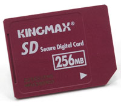

О портативных вычислительных устройствах или, в модной теперь формулировке, о "мобильных вычислениях" лидеры ИТ-индустрии говорили много и давно. Конечно, только словами дело не ограничивалось, но качественных изменений на этом фронте не наблюдалось в течение нескольких лет.
Первым признаком надвигающейся "эпохи перемен" стали разработка и внедрение стандартов беспроводной связи семейства 802.11. Вторым - появление Pentium M, первого процессора от Intel, разработанного специально для ноутбуков, что стало настоящим прорывом и вывело рынок портативных ПК на новый уровень.
Добавим сюда быстрые темпы развития и значительные достижения на рынке флэш-памяти - именно эту тенденцию продемонстрировало проведенное нами в конце прошлого года тестирование мобильных накопителей. Теперь можно не без оснований утверждать, что скорость работы и емкость флэш-памяти в ближайшие несколько лет достигнут показателей жестких дисков начального уровня!
Итак, мобилизация вычислений, о которой все так долго говорили, ...нет, еще не свершилась, но наконец-то идет полным ходом. Вот таким оказался главный и, честно говоря, несколько неожиданный итог этого тестирования.
Более того, главный итог развития всего рынка ПК за 2003 г. (несмотря на множество успехов, достигнутых в других областях), пожалуй, можно кратко сформулировать так: "начало массовой и всесторонней мобилизации".
Методика тестированияДля измерения быстродействия накопителей и носителей применялись синтетические тесты из пакета HD Tach 2.61. В тесте на скорость последовательного чтения данных регистрируется график зависимости скорости чтения данных от их расположения в логическом адресном пространстве носителя, рассчитываются средняя (Read Speed Average), максимальная (Read Speed Maximum) и минимальная (Read Speed Minimum) скорость чтения. В тесте на скорость последовательной записи регистрируется график зависимости скорости записи данных от их расположения в логическом адресном пространстве и рассчитываются средняя (Write Speed Average), максимальная (Write Speed Maximum) и минимальная (Write Speed Minimum) скорость чтения. Проводились также тесты на скорость передачи данных по шине в burst-режиме (Read Burst Speed), на скорость случайного доступа к данным (Random Access Time) и на загрузку процессора во время выполнения дисковых операций (CPU Utilization). Единственным исключением из общего правила стал записывающий DVD-накопитель Plextor PX-708UF, тестировавшийся средствами пакета Nero CD Speed 2.10. Все тесты выполнялись под управлением ОС Microsoft Windows XP Professional с Service Pack 1a, с драйвером видеоплаты Nvidia Detonator XP 45.23 и обновлением Microsoft DirectX 9.0a при объеме ОЗУ 512 Мбайт в видеорежиме с 32-бит глубиной цвета, разрешением 1024х768 и частотой кадровой развертки 85 Гц. При проведении испытаний мы использовали следующее стендовое оборудование: процессор Intel Pentium 4 3,0 ГГц с 800-МГц системной шиной, системную плату ASUS P4C800 Deluxe и мини-платформу Shuttle SB65G2 XPC (построены соответственно на наборе микросхем Intel 875P и Intel 865PE/ICH5R), два 256-Мбайт модуля памяти DDR400 SDRAM производства Samsung, графическую плату ASUS V9280S на наборе микросхем Nvidia GeForce4 Ti 4200-8X со 128 Мбайт видеопамяти и жесткий диск Seagate Barracuda ATA V ST3120023A емкостью 120 Гбайт. При тестировании DVD-накопителя Plextor PX-708UF к этому списку добавлялись "прожигаемые" DVD-диски Verbatim 4X DVD+R 4.7GB (Reorder Number: 43211), Verbatim 4X DVD-R 4.7GB (Reorder Number: 43235) и TDK 1-4X DVD+R 4.7GB (Item Code: DVD+R47MEB). При испытаниях внешних отсеков для жестких дисков применялся 2,5-дюйм жесткий диск Seagate ST94811A из семейства Momentus. Последний также выполнял роль эталона производительности современных жестких дисков для ноутбуков. Характеристики протестированных устройств приведены в табл. 1-9; полные результаты тестирования можно найти здесь. |
Флэш-память
Флэш-память появилась довольно давно - первые образцы были разработаны компанией Toshiba еще в 1984 г. Однако массовое ее использование началось только несколько лет назад с появлением цифровых фотокамер. Сейчас флэш-память с каждым годом все шире применяется для хранения и переноса данных, и, несомненно, этот рынок в ближайшее время будет активно развиваться. Сегодня выпускаются накопители нескольких типов: карты Compact Flash (CF), SmartMedia (SM), MultiMedia Card (MMC), SecureDigital (SD), Memory Stick PRO (MS PRO), Memory Stick (MS) и xD-Picture (xD) - для работы с ними необходим соответствующий флэш-накопитель, а также USB-флэш-память (так называемые USB-ключи) - последняя самодостаточна и не требует дополнительных устройств.
Флэш-память - разновидность ЭСППЗУ, ее полное название Flash Erase EEPROM (Electronically Erasable Programmable ROM) можно перевести как "быстро электрически стираемое программируемое постоянное запоминающее устройство". Другими словами, флэш-память - это энергонезависимая (не потребляющая энергии при хранении данных) перезаписываемая (данные можно стереть и записать заново при помощи электрического тока) память, содержимое которой можно быстро стереть.
К этому еще надо добавить, что флэш-память - это полупроводниковая память, причем особого типа. Ее элементарная ячейка, в которой хранится один бит информации, представляет собой не конденсатор, а полевой транзистор со специальной электрически изолированной областью, которую называют плавающим затвором (floating gate). Электрический заряд, помещенный в эту область, способен сохраняться в течение многих лет. При записи одного бита данных ячейка заряжается - заряд помещается на плавающий затвор, при стирании заряд снимается с плавающего затвора, и ячейка разряжается.
Проведенные тесты наглядно продемонстрировали, что быстродействие флэш-памяти сильно варьирует и зависит от ее типа - разброс может достигать 10 раз! Самой быстрой оказалась USB-флэш-память (скорость чтения/записи до 7,5/6,8 Мбайт/с). За ней следуют флэш-карты CF (6,4/4,2 Мбайт/с), SD (5,8/4,9 Мбайт/с), SM (3,9/0,77 Мбайт/с) и xD (4,0/0,70 Мбайт/с), MMC (2,0/1,9 Мбайт/с), MS PRO (1,4/0,52 Мбайт/с), MS (1,2/0,65 Мбайт/с).
Разброс по ценовым характеристикам у флэш-памяти меньше, но также весьма ощутим - до двух раз. Бесспорным лидером здесь оказались CF-карты - у них средняя стоимость 1 Гбайт емкости составляла 220-320 долл. (для наиболее популярных в ближайшее время 1-Гбайт моделей - 260 долл.). USB-флэш-память заняла второе место - 270-370 долл. (среднее по всем моделям - 300 долл.). В среднем ценовом диапазоне расположились карты MMC - 280-440 долл. (для самых "ходовых" 256-Мбайт моделей - 310 долл.), SM - 300-400 долл. (128-Мбайт карты - 340 долл.) и SD - 300-500 долл. (256-Мбайт карты - 340 долл.). В верхнем диапазоне цен оказались карты xD - 430-520 долл. (среднее по всем моделям - 490 долл.) и, наконец, самые дорогостоящие флэш-карты MS PRO/MS - 400-640 долл. (для наиболее распространенных 128-Мбайт - 480 долл.). Причем если высокие цены xD-карт пока оправданы их новизной (первые флэш-карты этого типа были выпущены в середине 2002 г.), то цены на MS-карты, очевидно, удерживаются на высоком уровне искусственно.
USB-флэш-память и CF-карты лидируют и по емкости - до 4 Гбайт. Карты MS PRO здесь на втором месте - емкость до 1 Гбайт, за ними следуют карты-"середняки" MMC, SD и xD - до 512 Мбайт. Наконец, меньше всего данных можно разместить на картах MS и SM - соответственно до 256 и 128 Мбайт.
Итак, из устройств флэш-памяти выгоднее всего приобретать USB-флэш-память (конечно, только современные модели с интерфейсом USB 2.0) и CF-карты - благодаря отличным скоростным и ценовым характеристикам, причем тактика выбора между ними вполне прозрачна. В качестве скоростного и универсального (не требующего дополнительных устройств) накопителя для переноса небольшого объема данных (на сегодня до 4 Гбайт) лучше приобрести USB-флэш-память. Для работы же с данными большего объема выгоднее приобрести набор CF-карт - однако такое решение дает несколько меньшее быстродействие и требует покупки как минимум монофункционального CF- или многофункционального флэш-накопителя.
В обзоре мы также использовали результаты испытаний протестированных год назад флэш-карт (в "связке" с монофункциональными флэш-накопителями DataFab с интерфейсом IEEE 1394) и USB-флэш-памяти. Эти данные позволяют, например, продемонстрировать значительное увеличение быстродействия CF-карт и USB-флэш-памяти - соответственно примерно в 1,5 и 10 раз! Правда, в последнем случае прирост обеспечивается не столько за счет усовершенствования микросхем памяти, сколько за счет более скоростного внешнего интерфейса USB 2.0. Попутно напомним, что пропускная способность шин USB 1.0/USB 1.1, USB 2.0 и IEEE 1394 составляет соответственно 12, 480 и 400 Мбит/с (или 1,5, 60 и 50 Мбайт/с).
Преимущества флэш-памяти по сравнению с другими средствами переноса и хранения данных очевидны - высокая надежность и ударопрочность (результат отсутствия движущихся компонентов и простоты механической конструкции носителей и накопителей), малое энергопотребление, компактность. Однако у нее есть и недостатки - ограниченное число циклов перезаписи (до 1 млн) и относительно медленная работа.
Последнее обстоятельство связано с принципиальной особенностью флэш-памяти: нельзя перезаписать содержимое одной отдельно взятой ее ячейки, можно только стереть содержимое всей микросхемы памяти (именно поэтому эту память назвали быстростираемой) или блока из нескольких ячеек памяти и потом записать туда новую информацию. Изменение содержимого одного бита (байта) данных во флэш-памяти происходит поэтапно - сначала с микросхемы флэш-памяти в буфер считывается блок данных, потом этот блок стирается в микросхеме, затем в буфере изменяется нужный бит (байт) и блок данных снова записывается в микросхему.
Поэтому самые быстродействующие экземпляры флэш-памяти по скорости работы пока заметно проигрывают 2,5-дюйм жестким дискам и внешним накопителям на их базе - до 3,5 раз при чтении и до 2 раз при записи данных. Но, с другой стороны, флэш-карты уже вплотную приблизились здесь к оптическим DVD-накопителям!
Кстати, по емкости флэш-память уже на равных соперничает с 4,7-Гбайт DVD-дисками и в ближайшее время, несомненно, обгонит последние. Не исключено даже, что она "вторгнется" на "территорию" жестких дисков начального уровня (на сегодня минимально приемлемый объем для накопителей этого типа установился на уровне 20 Гбайт).
Флэш-накопители
Главные "герои" проведенного тестирования - конечно, флэш-карты. Но ключевым моментом при их испытаниях был подбор "правильного" флэш-накопителя, поэтому прежде всего необходимо "разобраться" с последними.
Сегодня пользователям зачастую приходится иметь дело с флэш-картами разных типов и, следовательно, приобретать многофункциональный флэш-накопитель, позволяющий работать с "флэшками" нескольких стандартов. Казалось бы, такое решение можно только приветствовать - это значительно удобнее и, что немаловажно, дешевле "связки" из нескольких монофункциональных флэш-накопителей. Если бы не одно "но" - ни один из четырех протестированных многофункциональных флэш-накопителей (табл. 1) не смог одинаково качественно (читай: достаточно быстро) работать с флэш-картами всех типов и не годится на роль универсального флэш-накопителя! Иначе говоря, если в природе и существует грамотно сконструированный многофункциональный флэш-накопитель, к нам на тестирование он не попал.
Таблица 1. Технические характеристики и цены. Флэш-накопители
| Розничная цена, долл.** | Интерфейс | Тип флэш-карт | Рабочая температура, град. C | Изготовитель | |
| Belkin Hi-Speed USB 2.0 8-in-1 Media Reader | 60 | USB 2.0 | CF I, CF II, MD, SM, MMC, SD, MS | н/д | Belkin, http://www.belkin.com |
| DataFab MDCF-FW* | 50 | IEEE 1394 | CF | 0-70 | DataFab Systems, http://www.datafab.com |
| DataFab MDSM-FW* | 45 | IEEE 1394 | SM | 0-70 | |
| DataFab MIMK-FW* | 50 | IEEE 1394 | MS | 0-70 | |
| Kingston USB 2.0 Hi-Speed 6 in 1 Reader | 35 | USB 2.0 | CF I, CF II, MD, SM, MMC, SD, MS | н/д | Kingston Technology, http://www.kingston.com |
| Olympus MAUSB-10 | 40 | USB 1.1 | SM, xD | 0-40 | Olympus, http://www.olympus.com.ru |
| Olympus MAUSB-100 | 35 | USB 2.0 | xD | 0-40 | |
| SanDisk ImageMate 6 in 1 Reader/Writer | 40 | USB 2.0 | CF I, CF II, SM, MMC, SD, MS | Н/д | Sandisk, http://www.sandisk.com |
| Transcend 7 in 1 Card Reader/Writer | 30 | USB 2.0 | CF I, CF II, MD, SM, MMC, SD, MS, MS Pro | 0-70 | Transcend, http://www.transcend.com.tw |
| * Модель выпущена более года назад; ** по состоянию на 25 ноября 2003 г.; н/д - нет данных. | |||||
Например, флэш-накопитель Belkin Hi-Speed USB 2.0 8-in-1 Media Reader быстрее всех работал с картами CF и MMC (поэтому флэш-карты этих типов тестировались на нем), достаточно быстро "расправился" с SM- и SD-картами, но показал очень низкую скорость с картами MS PRO и MS.
Модель Kingston USB 2.0 Hi-Speed 6 in 1 Reader лучше всех "оперировала" SM-картами (и потому применялась для их тестирования), разделила 1-2-е места с накопителем от SanDisk по скорости работы с картами MS PRO/MS, продемонстрировала достаточно высокое быстродействие в случае SD-карт и среднее - для MMC-карт, но медленно работала с CF-картами.
SanDisk ImageMate 6 in 1 Reader/Writer лидировал по скорости работы с картами SD и разделил 1-2-е места с накопителем от Kingston по скорости работы с картами MS PRO/MS (потому применялся для тестирования карт SD и MS PRO/MS), продемонстрировал среднее быстродействие на MMC-картах, но медленно оперировал CF-картами и вообще отказался работать с картами SM (скорее всего, на тестирование попал неисправный экземпляр этой модели).
Наконец, Transcend 7 in 1 Card Reader/Writer быстро работал с картами MS PRO, немного уступив лидировавшим здесь моделям от Kingston и SanDisk, но медленно - с картами MS, показал среднее быстродействие на CF-картах, довольно медленно считывал, но быстро записывал данные на SM-карты и медленнее всех оперировал картами MMC и SD.
Вывод очевиден - добиться одинаково качественной работы флэш-накопителя с "флэшками" всех типов пока очень непросто (если вообще возможно). Поэтому многофункциональный флэш-накопитель надо выбирать под карты того типа (или двух-трех типов), которые будут применяться наиболее часто.
Интересно отметить, что выпущенный более года назад монофункциональный SM-накопитель DataFab MDSM-FW записывал данные на флэш-карты быстрее (!) новых многофункциональных моделей (до 0,77 Мбайт/с против 0,68 Мбайт/с), но заметно проигрывал им в скорости чтения (2,6 Мбайт/с против 3,1-3,9 Мбайт/с). В то же время MS-мононакопитель DataFab MIMK-FW (также годичной давности) по скорости работы проигрывал всем современным многофункциональным конкурентам, за исключением модели от Belkin - производительность обоих накопителей была одинаковой.
Следует отдельно остановиться на флэш-накопителе Olympus MAUSB-10 - эта двухфункциональная модель позволяет работать с картами SM и xD. MAUSB-10 оборудован медленным интерфейсом USB 1.1, что, как показывает практика эксплуатации аналогичных устройств, сразу ограничивает его быстродействие на уровне 0,8-0,9 Мбайт/с и, конечно, не позволяет раскрыть скоростной потенциал SM- и xD-карт.

Однако небыстрый и, по правде говоря, морально устаревший интерфейс USB 1.1 оказался не единственным узким местом MAUSB-10. Последний очень медленно считывал/записывал данные с флэш-карт PNY SM 128 Мбайт и Fujifilm xD 256 Мбайт - по данным тестов из пакета HD Tach, на скорости всего лишь 0,4/0,2 Мбайт/с. Важно подчеркнуть, что результаты тестов для карт разного типа совпадали с точностью "до миллиметра"! Причем в дополнительно проведенных тестах на скорость чтения/записи файлов была зафиксирована примерно такая же производительность - около 0,4/0,1 Мбайт/с. Очевидно, начинка MAUSB-10 работает медленнее USB-интерфейса и катастрофически (иначе не скажешь) "режет" быстродействие флэш-карт.
Кроме того, при работе с картой Olympus xD 512 Мбайт MAUSB-10 дестабилизировал работу системы (последняя самопроизвольно перегружалась) и "выдал" неправдоподобно высокую скорость чтения в тесте из пакета HD Tach - в среднем около 5 Мбайт/с. Приходится, к сожалению, констатировать, что MAUSB-10 - весьма "сырое" устройство и его покупка себя не оправдывает.
Второй протестированный xD-накопитель, монофункциональная модель Olympus MAUSB-100 с интерфейсом USB 2.0, все тесты прошел нормально, и к его работе претензий не было. Кстати, среди протестированных флэш-накопителей MAUSB-100 единственный получил высший итоговый балл. Однако у него не было соперника ("тихоходный" MAUSB-10 не в счет), и объективно оценить качество его работы не представлялось возможным, поэтому MAUSB-100 и не был отмечен знаком "Выбор редакции BYTE/Россия". В результате ни один флэш-накопитель не попал в число победителей проведенного тестирования.
Флэш-карты CF
Исторически первыми накопителями на базе флэш-памяти, появившимися на рынке, были карты ATA Flash. Они изготавливаются в виде стандартных карт PC Card, помимо микросхем флэш-памяти, в них устанавливается ATA-контроллер, и при работе они эмулируют обычный IDE-диск. Интерфейс у этих карт параллельный. Карты ATA Flash не получили широкого распространения и в настоящее время используются крайне редко.
Карты CF были предложены компанией SanDisk в качестве более компактной и удобной в работе альтернативы картам ATA Flash, впервые появившись в 1994 г. Поэтому разработчики стандарта CF предусмотрели возможность работы этих карт как устройств PC Card или как IDE-устройств. В первом случае карты действуют как обычные PC Card устройства, и их интерфейс "превращается" в шину PC Card. Во втором - работают как жесткие IDE-диски, а их интерфейс - как ATA-шина.
Все CF-карты имеют 50-контактный параллельный интерфейс. Кстати, существуют карты CF двух типов - Type I и Type II. Карты типа Type II на два миллиметра толще и появились только потому, что раньше корпуса карт Type I не позволяли разместить внутри флэш-память большого объема для изготовления вместительных носителей CF. В настоящее время необходимость в этом возникает нечасто - соответственно карты Type II встречаются крайне редко. Отметим, что в накопители для карт Type II можно устанавливать карты Type I, тогда как обратное невозможно.
Среди протестированных CF-карт (см. табл. 2) знаком "Выбор редакции BYTE/Россия" были отмечены три модели - лидировавшая по производительности Transcend Ultra Performance 45X CF 2 Гбайт, незначительно отставшая от нее Transcend Ultra Performance 45X CF 1 Гбайт и занявшая третье место PNY CF 1 Гбайт (последняя, кстати, обладает привлекательными ценовыми характеристиками).
Таблица 2. Технические характеристики и цены. Флэш-карты CF
| Розничная цена, долл.** | Макс. скорость чтения/записи, Мбайт/с | Рабочая температура, град. C | Устойчивость к ударам в рабочем состоянии, G | Устойчивость к вибрации в рабочем состоянии, G | Стоимость 1 Гбайт емкости, долл. | Изготовитель | |
| Transcend Ultra Performance 45X CF 2 Гбайт | 610 | н/д | 0-70 | н/д | н/д | 305 | Transcend, www.transcend.com.tw |
| Kingmax CF 1 Гбайт | 240 | н/д | н/д | н/д | н/д | 240 | Kingmax, www.kingmax.com.tw |
| Kingston CF 1 Гбайт | 270 | н/д | 0-70 | 1000 | 15 | 270 | Kingston Technology, www.kingston.com |
| PNY CF 1 Гбайт | 230 | 1,5/н/д | 0-60 | 2000 | 15 | 230 | PNY Technologies, www.pny.com |
| PQI F1 40X CF 1 Гбайт | 250 | 6,0/н/д | 0-70 | н/д | н/д | 250 | PQI, www.pqi.com.tw |
| Transcend Ultra Performance 45X CF 1 Гбайт | 300 | н/д | 0-70 | н/д | н/д | 300 | Transcend, www.transcend.com.tw |
| TwinMOS CF 1 Гбайт | 250 | н/д/5,4 | н/д | н/д | н/д | 250 | TwinMOS, www.twinmos.com |
| Kingston CF 512 Мбайт | 120 | н/д | 0-70 | 1000 | 15 | 240 | Kingston Technology, www.kingston.com |
| Kingston High-Speed CF 512 Мбайт | 140 | н/д | 0-70 | 1000 | 15 | 280 | Kingston Technology, www.kingston.com |
| PNY CF 512 Мбайт | 125 | 1,5/н/д | 0-60 | 2000 | 15 | 250 | PNY Technologies, www.pny.com |
| SanDisk CF 512 Мбайт* | 120 | н/д | 0-60 | 2000 | 15 | 240 | SanDisk, www.sandisk.com |
| Transcend Ultra Performance 45X CF 512 Мбайт | 160 | н/д | 0-70 | н/д | н/д | 320 | Transcend, www.transcend.com.tw |
| Digma CF 256 Мбайт | 55 | 3,5 | 0-60 | 1000 | н/д | 220 | Digma, www.digma.ru |
| Kingston CF 256 Мбайт* | 60 | н/д | 0-70 | 1000 | 15 | 240 | Kingston Technology, www.kingston.com |
| PQI Hi-Speed CF 256 Мбайт* | 55 | н/д | Н/д | н/д | н/д | 220 | PQI, www.pqi.com.tw |
| SanDisk CF 256 Мбайт* | 60 | н/д | 0-60 | 2000 | 15 | 240 | SanDisk, www.sandisk.com |
| Transcend Ultra Performance 25X CF 256 Мбайт* | 75 | 3,8/н/д | 0-60 | н/д | н/д | 300 | Transcend, www.transcend.com.tw |
| * Модель выпущена более года назад; ** по состоянию на 25 ноября 2003 г.; н/д - нет данных. | |||||||
Помимо этого к CF-картам с быстродействием выше среднего можно отнести только Transcend Ultra Performance 45X CF 512 Мбайт, к моделям со средней производительностью - Kingston CF 1 Гбайт, PQI F1 40X CF 1 Гбайт, Kingston High-Speed CF 512 Мбайт и Digma CF 256 Мбайт. Скорость работы остальных CF-карт можно классифицировать как "ниже среднего".
Необходимо подчеркнуть, что быстродействие CF-карт (как, впрочем, и флэш-карт других типов) зависит не только от производителя, но и от емкости карты и семейства, в рамках которого она выпущена, подчиняясь следующему правилу: "чем больше емкость и чем позднее выпущена карта, тем выше ее производительность". Например, если взять 2-Гбайт и 512-Мбайт модели из семейства Transcend Ultra Performance 45X, то последняя проигрывает по скорости чтения в 1,3 раза; в случае обычной и "ускоренной" 512-Мбайт карт соответственно из семейств Kingston CF и Kingston High-Speed CF модель High-Speed в 1,7 раза быстрее. Однако из этого правила могут быть исключения: так, у карт SanDisk CF 256 Мбайт и 512 Мбайт двукратный рост емкости привел к снижению скорости чтения/записи в 1,3/1,1 раза.
Флэш-карты SM
Стандарт SM был предложен в 1995 г. компаниями Toshiba и Samsung, разработавшими флэш-карты чрезвычайно простой конструкции. В картах SM нет встроенного контроллера интерфейса, по сути это одна или две микросхемы флэш-памяти, "упакованные" в пластиковый кожух. Интерфейс карт SM - параллельный, 22-контактный, но из них для передачи данных используется только восемь линий.
Как уже упоминалось, мы включили в этот обзор результаты испытаний протестированных год назад флэш-карт - в классе SM-карт они представлены моделями Kingston SM 128 Мбайт и PQI SM 128 Мбайт (табл. 3). К сожалению, корректно оценить быстродействие последних не представлялось возможным - скорость чтения у обеих карт оказалась очень низкой (2,5-2,6 Мбайт/с) и, скорее всего, ограничивалась медленной "начинкой" флэш-накопителя DataFab MDSM-FW. Интересно, однако, отметить, что обе модели отлично зарекомендовали себя в тестах на скорость записи, причем PQI SM 128 Мбайт здесь даже вышла в лидеры - 0,77 Мбайт/с.
Таблица 3. Технические характеристики и цены. Флэш-карты SM
| Розничная цена, долл.** | Макс. скорость чтения/записи, Мбайт/с | Рабочая температура, град. C | Стоимость 1 Гбайт емкости, долл. | Изготовитель | |
| Kingston SM 128 Мбайт* | 45 | 3,5/н/д | 0-60 | 360 | Kingston Technology, http://www.kingston.com |
| PNY SM 128 Мбайт | 37 | 2,0/н/д | н/д | 296 | PNY Technologies, http://www.pny.com |
| PQI SM 128 Мбайт* | 40 | н/д | н/д | 320 | PQI, http://www.pqi.com.tw |
| Transcend SM 128 Мбайт | 50 | н/д | н/д | 400 | Transcend, http://www.transcend.com.tw |
| PNY SM 64 Мбайт | 20 | 2,0/н/д | н/д | 320 | PNY Technologies, http://www.pny.com |
| Transcend SM 64 Мбайт | 25 | н/д | н/д | 400 | Transcend, http://www.transcend.com.tw |
| * Модель выпущена более года назад; ** по состоянию на 25 ноября 2003 г.; н/д - нет данных. | |||||
Что же касается других моделей, то они продемонстрировали одинаковую производительность и фактически различались только ценовыми характеристиками. Бесспорным лидером здесь оказалась карта PNY SM 128 Мбайт, отмеченная знаком "Выбор редакции BYTE/Россия".
Флэш-карты MMC
Стандарт MMC, предложенный в 1997 г., был разработан совместными усилиями компаний Hitachi, SanDisk и Siemens. Карты MMC имеют семиконтактный последовательный интерфейс, который может работать на частоте до 20 МГц. Внутри пластикового корпуса карты размещается микросхема флэш-памяти и контроллер MMC-интерфейса.
Среди MMC-карт (табл. 4) в лидеры по скорости работы вышли сразу четыре модели - Digitex MMC 512 Мбайт, Digma MMC 256 Мбайт, Kingmax MMC 256 Мбайт и Kingmax MMC 128 Мбайт, показавшие, кстати, одинаковое быстродействие в тестах. Три из них были отмечены знаком "Выбор редакции BYTE/Россия".
Первое место мы присудили Digitex MMC 512 Мбайт - за наибольшую емкость, т. е. как наиболее совершенной модели среди протестированных MMC-карт. Второе место заняла Digma MMC 256 Мбайт - эта модель лидировала в своем классе по ценовым характеристикам. Третьим призером стала Kingmax MMC 256 Мбайт - благодаря надежной PIP-"упаковке" (см. врезку "PIP - новый "упаковочный" стандарт для флэш-карт") и хорошим ценовым характеристикам. Четвертая модель из числа лидеров, Kingmax MMC 128 Мбайт, не вошла в число победителей только по причине заметного отставания по ценовым характеристикам от 256-Мбайт моделей Digma и Kingmax.
Таблица 4. Технические характеристики и цены. Флэш-карты MMC
| Розничная цена, долл.** | Макс. скорость чтения/записи, Мбайт/с | Рабочая температура, ?C | Стоимость 1 Гбайт емкости, долл. | Изготовитель | |
| Digitex MMC 512 Мбайт | 220 | 3,2/3,2 | -25-85 | 440 | Digitex, http://www.digitex.ru |
| Digma MMC 256 Мбайт | 70 | 1,5/1,3 | -25-85 | 280 | Digma, http://www.digma.ru |
| Kingmax MMC 256 Мбайт | 80 | н/д | н/д | 320 | Kingmax, http://www.kingmax.com.tw |
| Kingmax MMC 256 Мбайт* | 80 | н/д | н/д | 320 | |
| Kingmax MMC 128 Мбайт | 45 | 1,7/1,6 | -25-85 | 360 | |
| PNY MMC 128 Мбайт | 50 | 1,5 | н/д | 400 | PNY Technologies, http://www.pny.com |
| Transcend MMC 128 Мбайт | 50 | 1,6/н/д | -25-85 | 400 | Transcend, http://www.transcend.com.tw |
| Verbatim MMC 128 Мбайт | 45 | н/д | н/д | 360 | Verbatim, http://www.verbatim.com |
| Kingston MMC 64 Мбайт | 25 | 1,7/0,4 | -25-85 | 400 | Kingston Technology, http://www.kingston.com |
| PQI MMC 64 Мбайт | 25 | н/д | н/д | 400 | PQI, http://www.pqi.com.tw |
| Transcend MMC 64 Мбайт | 25 | 1,7/0,4 | -25-85 | 400 | Transcend, http://www.transcend.com.tw |
| Verbatim MMC 64 Мбайт | 25 | н/д | н/д | 400 | Verbatim, http://www.verbatim.com |
| * Флэш-карта предоставлена компанией Kingmax; ** по состоянию на 25 ноября 2003 г.; н/д - нет данных. | |||||
Кстати, в нашем распоряжении было два образца карты Kingmax MMC 256 Мбайт - первый попал в Россию через дилерскую сеть компании Kingmax, второй был предоставлен непосредственно изготовителем. Интересно отметить, что при детальном сравнении карт в их конструкции обнаружились некоторые отличия (образец от Kingmax был "сработан" грубее), но в тестах на скорость работы оба экземпляра показали идентичные результаты.
Что же касается других протестированных MMC-карт, то их быстродействие было средним и практически одинаковым, за исключением модели Kingston MMC 64 Мбайт, которая очень медленно записывала данные.
PIP - новый "упаковочный" стандарт для флэш-картТайваньская компания Kingmax (http://www.kingmax.com.tw), хорошо известная на российском рынке памяти для ПК и разработавшая в свое время малогабаритную "упаковку" TinyBGA для модулей SDRAM-памяти, снова "отличилась". На этот раз Kingmax предложила новый способ "упаковки" флэш-карт - PIP (Product In Package), что, пожалуй, лучше всего перевести как "продукт в оболочке". Флэш-карты традиционной конструкции состоят из трех отдельных механических частей - двух пластиковых крышек (верхней и нижней) и заключенной между ними подложки с электронными компонентами (контроллером массива памяти, микросхемами памяти и пассивными элементами), которые "сбиваются" в единую сборку. Флэш-карты, "упакованные" по методу PIP, устроены иначе - у них подложка с электронными компонентами запрессовывается целиком в пластиковую "обертку". В итоге механическая конструкция флэш-карты получается монолитной. По сравнению с обычной PIP-"упаковка" обеспечивает большую плотность монтажа электронных компонентов - на подложке можно расположить большее число элементов. Как следствие, в PIP-карты легко встроить две микросхемы памяти, что обеспечивает большую емкость и позволяет реализовать двухканальный режим передачи данных - он, конечно, эффективнее одноканального и обеспечивает большую скорость работы флэш-карты. Кроме того, благодаря монолитности корпуса PIP-карты невозможно "промочить" или "запылить", и они более устойчивы к статическим и ударным механическим нагрузкам. Наконец, за счет применения термостойких материалов PIP-карты способны работать в условиях экстремального перегрева - до 185?C. Кстати, помимо базового компания Kingmax разработала "стеллажный" вариант PIP-упаковки (Stacked PIP), когда одна микросхема памяти размещается непосредственно на другой. В итоге на той же площади подложки монтируется не одна микросхема, а сборка из двух (или нескольких) микросхем памяти, что еще больше увеличивает плотность монтажа. Очевидно, на сегодня PIP - оптимальный способ оформления миниатюрных печатных плат с электроникой, и, по оценкам Kingmax, в ближайшее время он станет главным методом "упаковки" флэш-карт. Стоит также отметить, что в настоящее время Kingmax применяет PIP-"упаковку" при изготовлении карт SM, MMC, SD и xD. |
Флэш-карты SD
SD, один из последних флэш-стандартов (моложе его только xD и MS PRO), был разработан в 2000 г. компаниями Matsushita, SanDisk и Toshiba. Фактически SD представляет собой развитие стандарта MMC, поэтому MMC-карты можно устанавливать в накопители SD (обратное неверно). Интерфейс SD - девятиконтактный, последовательно-параллельный (данные могут передаваться по одной, двум или четырем линиям одновременно), работает на частоте до 25 МГц. Карты SD традиционно оснащаются переключателем для защиты содержимого от записи, однако стандарт предусматривает и модификацию SD-карт без такого переключателя.
Победителем среди протестированных устройств этого класса (табл. 5) была признана модель Kingmax SD 256 Мбайт. В ее пользу говорит лучшая среди протестированных SD-карт производительность, привлекательные ценовые характеристики (второе место по стоимости 1 Гбайт емкости) и, конечно, новая PIP-"упаковка".

Таблица 5. Технические характеристики и цены. Флэш-карты SD
| Розничная цена, долл.** | Макс. скорость чтения/записи, Мбайт/с | Рабочая температура, ?C | Стоимость 1 Гбайт емкости, долл. | Изготовитель | |
| Kingston SD 512 Мбайт | 190 | н/д | н/д | 380 | Kingston Technology, http://www.kingston.com |
| PNY SD 512 Мбайт | 210 | 2,0 | н/д | 420 | PNY Technologies, http://www.pny.com |
| Transcend SD 512 Мбайт | 250 | 2,0 | -25-85 | 500 | Transcend, http://www.transcend.com.tw |
| Digma SD 256 Мбайт | 75 | 6,3/4,7 | -25-85 | 300 | Digma, http://www.digma.ru |
| Kingmax SD 256 Мбайт | 80 | н/д | 0-70 | 320 | Kingmax, http://www.kingmax.com.tw |
| Kingmax SD 256 Мбайт* | 80 | н/д | 0-70 | 320 | |
| Kingston SD 256 Мбайт | 80 | н/д | н/д | 320 | |
| PNY SD 256 Мбайт | 85 | 2,0 | н/д | 340 | PNY Technologies, http://www.pny.com |
| PQI SD 256 Мбайт | 85 | н/д | н/д | 340 | PQI, http://www.pqi.com.tw |
| Transcend SD 256 Мбайт | 85 | 2,0 | -25-85 | 340 | Transcend, http://www.transcend.com.tw |
| Verbatim SD 256 Мбайт | 100 | н/д | н/д | 400 | Verbatim, http://www.verbatim.com |
| * Флэш-карта предоставлена компанией Kingmax; ** по состоянию на 25 ноября 2003 г.; н/д - нет данных. | |||||
Кстати, мы протестировали два экземпляра Kingmax SD 256 Мбайт - первый попал в Россию через дилерскую сеть Kingmax, второй был предоставлен изготовителем. Дизайн лицевой стороны обеих карт был одинаковым, однако их обратные стороны отличались цветом (у образца от Kingmax - черный, у другого - зеленый) и, что важно, расположением соединительных проводников (их разводка частично просматривается по рельефу пластикового покрытия карты). Последнее обстоятельство позволяет утверждать, что внутренняя конструкция этих карт различна, и это, кстати, косвенно подтверждается результатами тестов на быстродействие - скорость записи у образца от Kingmax была на 10% ниже.
Второе место среди SD-карт заняла модель Digma SD 256 Мбайт, третье - Transcend SD 512 Мбайт. Обе показали отличную скорость работы, разделив здесь 2-3-е места, и были отмечены в разделе "Выбор редакции", но категорически "разошлись" в ценах. Если модель от Digma лидировала в своем классе по стоимости 1 Гбайт емкости - вот почему ей было отдано предпочтение, то карта от Transcend заняла по этому показателю последнее место.
Помимо тройки лидеров высокую скорость в тестах удалось показать только одной карте - Transcend SD 256 Мбайт. Модели PNY SD 512 Мбайт и PQI SD 256 Мбайт продемонстрировали среднюю производительность. Быстродействие карт Kingston SD 512 Мбайт и Kingston SD 256 Мбайт было оценено как "ниже среднего". Наконец, две модели - PNY SD 256 Мбайт и Verbatim SD 256 Мбайт - работали очень медленно, и их, к сожалению, следует признать аутсайдерами.
Флэш-карты MS/MS PRO
Стандарт MS был предложен компанией Sony в 1998 г. Флэш-карты этого типа оборудованы переключателем для защиты от записи и 10-контактным последовательным интерфейсом, работающим на частоте до 20 МГц. Соответственно теоретически максимальная скорость передачи данных для них составляет 20 Мбит/с (или 2,5 Мбайт/с), однако реальная скорость работы протестированных MS-карт оказалась вдвое меньше и не превышала 1,2 Мбайт/с.
Здесь же стоит отметить еще три интересных момента. Во-первых, быстродействие всех протестированных MS-карт (табл. 6) было одинаковым. Во-вторых, среди них обнаружились три карты с маркировкой Lexar, предлагаемые компаниями PQI и Transcend, - последние, по-видимому, действительно поставляют MS-карты от Lexar в "чистом" виде. Причину столь нетрадиционного "коммерческого" подхода пока выяснить не удалось. Можно лишь предположить, что у PQI и Transcend есть проблемы с лицензированием MS-стандарта, что вынуждает их продавать MS-карты, выпущенные другой компанией и с "родной" маркировкой. В-третьих, карты MS (и MS PRO) могут выпускаться в малогабаритной "упаковке" Duo. В названии таких моделей добавляется одноименная вставка Duo, они предназначены для применения в связке с портативными устройствами и в "чистом" виде загружаются в MS PRO/MS-накопитель с загрузочным отсеком меньших размеров. Но при желании их можно использовать с обычным MS PRO/MS-накопителем - достаточно иметь специальный адаптер-переходник.
Таблица 6. Технические характеристики и цены. Флэш-карты MS PRO/MS
| Розничная цена, долл.** | Макс. скорость чтения/записи, Мбайт/с | Рабочая температура, ?C | Стоимость 1 Гбайт емкости, долл. | Изготовитель | |
| Sony MS PRO 256 Мбайт | 120 | н/д | 0-60 | 480 | Sony, http://www.sony.ru |
| PQI (Lexar) MS 128 Мбайт | 50 | н/д | Н/д | 400 | PQI, http://www.pqi.com.tw |
| Transcend (Lexar) MS 128 Мбайт | 60 | 2,45/1,5 | 0-60 | 480 | Transcend, http://www.transcend.com.tw |
| Sony MS 128 Мбайт* | 70 | 2,45/1,5 | н/д | 560 | Sony, http://www.sony.ru |
| Sony MS Duo 64 Мбайт | 40 | н/д | н/д | 640 | |
| Transcend (Lexar) MS 64 Мбайт | 40 | 2,45/1,5 | 0-60 | 640 | Transcend, http://www.transcend.com.tw |
| * Модель выпущена более года назад; ** по состоянию на 25 ноября 2003 г.; н/д - нет данных. | |||||
MS PRO - стандарт MS второго поколения, разработанный совместными усилиями Sony и SanDisk, и, кстати, пока самый молодой флэш-стандарт - о завершении его разработки было объявлено в январе 2003 г.
MS PRO предусматривает тот же 10-контактный интерфейс, но два режима передачи данных - последовательный и 4-бит параллельный. В первом случае пропускная способность внешнего интерфейса карты (максимальная скорость чтения) может теоретически достигать 20 Мбит/с (как и в стандарте MS), во втором - 160 Мбит/с (или 20 Мбайт/с). Происхождение последнего порогового значения, однако, до конца не ясно - если внешний интерфейс в параллельном режиме работает на частоте 20 МГц, то пропускная способность должна составлять 80 Мбит/с. Остается предположить, что в этом случае частота увеличивается до 40 МГц или регистрируются оба фронта тактовых импульсов (как, например, в памяти DDR SDRAM) - оба способа позволяют увеличить пропускную способность интерфейса вдвое.
Кроме того, в стандарте MS PRO декларируется минимально допустимая скорость записи - 15 Мбит/с, или 1,9 Мбайт/с (т. е. теоретически карты MS PRO "обязаны" записывать данные на скорости не менее этого уровня), и теоретический предел емкости флэш-карт - 32 Гбайт. При этом, правда, отмечается, что скорость чтения будет достигать верхнего предела, а скорость записи не будет опускаться ниже минимума (соответственно 160 и 15 Мбит/с) только при использовании накопителей, специально оптимизированных для работы с картами MS PRO.
Единственной картой MS PRO, представленной в этом тестировании, оказалась Sony MS PRO 256 Мбайт. Эта модель лидировала в своем классе по быстродействию и емкости и, как следствие, была награждена знаком "Выбор редакции BYTE/Россия". Следует, однако, отметить, что в тестах на скорость работы ее преимущество по сравнению с MS-картами было незначительным и, что настораживает больше всего, полученные показатели были очень далеки от заявленных теоретических пределов. Впрочем, здесь могут быть виноваты применявшиеся для тестирования флэш-накопители - возможно, они не оптимизированы должным образом для работы с картами MS PRO.
Флэш-карты xD
xD (xD Picture Card, полное название - eXtreme Digital Picture Card) можно смело назвать одним из самых перспективных флэш-стандартов: он был предложен компаниями Olympus и Fujifilm в июле 2002 г. и позиционируется как замена стандарта SM, а по новизне разработки уступает только стандартам MS PRO и мини-SD (уменьшенная в размерах версия SD). Кстати, на сегодня карты мини-SD - самые компактные флэш-карты. Впрочем, xD-карты можно также отнести к разряду миниатюрных "флэшек" - по габаритам (20х25х1,7 мм) они проигрывают только мини-SD и были самыми маленькими среди протестированных флэш-карт.
Теоретический предел емкости xD-карт равен 8 Гбайт, и, скорее всего, через три-четыре года его придется пересмотреть - емкость флэш-карт каждый год возрастает примерно вдвое, а максимальная емкость xD-карт на сегодня уже достигла 512 Мбайт.
К конструктивным особенностям xD-карт следует также отнести отсутствие встроенного контроллера (в этом они "повторяют" SM-карты).
Наконец, компании-разработчики xD-стандарта декларируют для 16/32-Мбайт карт этого типа скорость записи на уровне 1,3 Мбайт/с, для 64-Мбайт и выше - 3 Мбайт/с и не зависящую от емкости карт скорость чтения - 5 Мбайт/с, что, следует признать, совсем неплохо.
Однако производительность самых быстрых протестированных xD-карт (табл. 7), Olympus xD 512 Мбайт и Transcend (Olympus) xD 512 Мбайт, удостоенных знака "Выбор редакции BYTE/Россия", была заметно ниже (скорость чтения/записи - 4,0/0,70 Мбайт/с) и, возможно, ограничивалась флэш-накопителем Olympus MAUSB-100. Кстати, обе карты выпускаются компанией Olympus, но попадают на рынок по-разному (первая поставляется изготовителем, вторая - компанией Transcend) и, кроме того, отличаются ценовыми характеристиками. Здесь преимущество было на стороне модели от Olympus, признанной победителем среди xD-карт. Второе место было присуждено карте от Transcend.
Таблица 7. Технические характеристики и цены. Флэш-карты xD
| Розничная цена, долл.* | Макс.скорость чтения/записи, Мбайт/с | Рабочая температура, град. C | Стоимость 1 Гбайт емкости, долл. | Поставщик | |
| Olympus xD 512 Мбайт | 215 | н/д | 0-55 | 430 | Olympus, http://www.olympus.com.ru |
| Transcend (Olympus) xD 512 Мбайт | 260 | н/д | 0-40 | 520 | Transcend, http://www.transcend.com.tw |
| Fujifilm xD 256 Мбайт | 110 | н/д | н/д | 440 | Fujifilm, http://www.fujifilm.ru |
| Transcend (Fujifilm) xD 256 Мбайт | 130 | н/д | 0-40 | 520 | Transcend, http://www.transcend.com.tw |
| Fujifilm xD 128 Мбайт | 65 | н/д | н/д | 520 | Fujifilm, http://www.fujifilm.ru |
| * По состоянию на 25 ноября 2003 г.; н/д - нет данных. | |||||
Производительность других xD-моделей, Fujifilm xD 256 Мбайт, Transcend (Fujifilm) xD 256 Мбайт (карта выпускается Fujifilm, но предлагается на рынке компанией Transcend) и Fujifilm xD 128 Мбайт, была средней.
Накопители со встроенной флэш-памятью
В группу накопителей со встроенной флэш-памятью вошли модели USB-флэш-памяти и единственный MP3-проигрыватель - Creative MuVo NX - 128 Мбайт (табл. 8). Сначала рассмотрим результаты тестирования USB-устройств.
Таблица 8. Технические характеристики и цены. Накопители со встроенной флэш-памятью
| Розничная цена, долл.** | Интерфейс | Макс. скорость чтения/записи, Мбайт/с | Рабочая температура, ?C | Устойчивость к ударам в рабочем состоянии, G | Устойчивость к вибрации в рабочем состоянии, G | Стоимость 1 Гбайт емкости, долл. | Изготовитель | |
| PNY Attache 512 Мбайт | 160 | USB 2.0 | н/д | н/д | н/д | н/д | 320 | PNY Technologies, http://www.pny.com |
| PQI Traveling Disk USB 1.1 512 Мбайт | 135 | USB 1.1 | 0,95/0,60 | 0-60 | н/д | н/д | 270 | PQI, http://www.pqi.com.tw |
| Transcend JetFlash 2.0 2 Гбайт | 700 | USB 2.0 | 8,0/7,0 | н/д | 1000 | н/д | 350 | Transcend, http://www.transcend.com.tw |
| Transcend JetFlash 2.0 512 Мбайт | 185 | USB 2.0 | 8,0/7,0 | н/д | 1000 | н/д | 370 | |
| Transcend JetFlashA 256 Мбайт* | 85 | USB 1.1 | 1,16/0,85 | 0-70 | 150 (1000 - в нерабочем состоянии) | 0,2 (15 - в нерабочем состоянии) | 340 | |
| Transcend JetFlash 256 Мбайт* | 85 | USB 1.1 | 1,0/0,8 | 0-85 | 150 (1000 - в нерабочем состоянии) | 0,2 (15 - в нерабочем состоянии) | 340 | |
| Creative MuVo NX - 128 Мбайт | 125 | USB 1.1 | н/д | н/д | н/д | н/д | 1000 | Creative, ru.europe.creative.com |
| * Модель выпущена более года назад; ** по состоянию на 25 ноября 2003 г.; н/д - нет данных. | ||||||||
USB-флэш-память (USB-память, или USB-ключ) появилась на рынке в 2001 г. и на тот момент представляла собой совершенно новый тип носителей, в отличие, например, от флэш-карт. По форме USB-память напоминает брелок продолговатой формы, состоящий из двух половинок - защитного колпачка и собственно накопителя с USB-разъемом (внутри него размещается одна или две микросхемы флэш-памяти и USB-контроллер).
В работе USB-память удобнее флэш-карт - не требуется никаких дополнительных устройств, и до содержимого такого накопителя можно "добраться" за пару минут (конечно, под рукой должен быть ПК со свободным USB-портом). В худшем случае придется установить драйверы USB-памяти, в лучшем - новое USB-устройство и логический диск появятся в системе автоматически.
Среди устройств USB-памяти знака "Выбор редакции BYTE/Россия" были удостоены две модели - Transcend JetFlash 2.0 2 Гбайт и Transcend JetFlash 2.0 512 Мбайт, лидировавшие по скорости работы и, кстати, продемонстрировавшие одинаковую производительность в тестах (последнее, впрочем, закономерно - оба накопителя выпускаются в рамках одного семейства). Из них мы отдали предпочтение Transcend JetFlash 2.0 2 Гбайт как модели с наибольшей в этом классе и, подчеркнем, впечатляющей емкостью, присудив ей первое место. Цена этого накопителя, однако, очень высока - в среднем 700 долл. В то же время Transcend JetFlash 2.0 512 Мбайт, получивший второе место, относительно недорог - 185 долл., и его можно рекомендовать для покупки в качестве "среднеклассового" USB-ключа. Правда, по стоимости 1 Гбайт емкости он немного проигрывает 2-Гбайт модели.
Накопитель PNY Attache 512 Мбайт заметно отставал по быстродействию от лидировавших моделей Transcend - примерно в 1,5 раза. Тем не менее скорость его работы можно считать средней.
А вот три USB-ключа с медленным интерфейсом USB 1.1 - PQI Traveling Disk USB 1.1 512 Мбайт, Transcend JetFlashA 256 Мбайт и Transcend JetFlash 256 Мбайт, как и следовало ожидать, продемонстрировали очень низкую производительность. Поэтому их покупка себя не оправдывает, за исключением, быть может, модели от PQI - ее ценовые характеристики оказались лучшими в классе.
Теперь подробнее остановимся на MP3-проигрывателе Creative MuVo NX - 128 Мбайт - он методологически включен в этот обзор как пример сложного портативного устройства, которое дополнительно может выполнять функции USB-памяти.
Итак, основное назначение MuVo NX - воспроизведение на "ходу" звуковых файлов (он "понимает" форматы MP3 и WMA). Конструктивно проигрыватель состоит из двух легко разделяемых частей - отсека питания с одной пальчиковой AAA-батареей и "интеллектуального" модуля. Последний оборудован монохромным экраном с разрешением 32?96, разъемом для подключения наушников (входят в комплект поставки), кнопкой Play/Pause, колесом прокрутки для выбора звуковой композиции при их воспроизведении и управления режимом работы проигрывателя через экранное меню, двумя кнопками регулировки громкости, встроенным эквалайзером и микрофоном (поэтому MuVo NX можно применять как диктофон).
И самое главное - по названию этого устройства нетрудно догадаться о наличии встроенной 128-Мбайт флэш-памяти (выпускается также 256-Мбайт модификация MuVo NX), поэтому его можно дополнительно использовать как USB-память. Однако медленный внешний интерфейс USB 1.1. сильно ограничивает быстродействие - скорость передачи данных не превышает 0,8 Мбайт/с. Но, пожалуй, главный недостаток MuVo NX как накопителя заключается в запредельно высокой стоимости 1 Гбайт емкости - в среднем 1000 долл.
В итоге можно сказать, что MuVo NX, конечно, изредка можно использовать как портативный накопитель, однако для активной работы с данными или переноса больших объемов информации он не годится по причине низкой производительности, малой емкости и неадекватных ценовых характеристик.
Выбор редакции

Среди протестированных флэш-карт всех типов раньше всех на рынке появились CF-карты - неслучайно на сегодня они пользуются наибольшей популярностью. В этом классе самыми быстрыми оказались три модели - Transcend Ultra Performance 45X CF 2 Гбайт, незначительно отставшая от нее Transcend Ultra Performance 45X CF 1 Гбайт и занявшая третье место PNY CF 1 Гбайт.
В классе SM-карт бесспорным лидером стала модель PNY SM 128 Мбайт - благодаря отличному быстродействию и лучшим ценовым характеристикам.
Среди MMC-карт лучшими были признаны три модели - Digitex MMC 512 Мбайт, Digma MMC 256 Мбайт и Kingmax MMC 256 Мбайт, продемонстрировавшие одинаково высокую производительность. Плюс к тому на стороне первой - наибольшая емкость, второй - более чем привлекательная цена, третьей - новая оригинальная PIP-"упаковка".
В классе SD-карт с тестами на скорость работы быстрее всех справилась Kingmax SD 256 Мбайт, среди достоинств которой также значатся привлекательные ценовые характеристики и надежная PIP-"упаковка". Digma SD 256 Мбайт и Transcend SD 512 Мбайт продемонстрировали практически такую же производительность, причем первая лидировала среди SD-карт по стоимости 1 Гбайт емкости.
Среди флэш-карт MS PRO/MS победителем была признана модель Sony MS PRO 256 Мбайт, лидировавшая по быстродействию и емкости.
Модели Olympus xD 512 Мбайт и Transcend (Olympus) xD 512 Мбайт оказались самыми быстрыми среди xD-карт. Помимо этого, у карты от Olympus имеется еще одно достоинство - она лидировала в своем классе по ценовым характеристикам.
USB-ключи Transcend JetFlash 2.0 2 Гбайт и Transcend JetFlash 2.0 512 Мбайт показали лучшие в своем классе результаты в тестах на скорость работы и отлично подойдут на роль устройств для переноса небольших объемов данных.
Записывающие DVD-накопители
Присутствие в "мобильном" обзоре настольного записывающего DVD-накопителя, да еще внешнего и в единственном числе, на первый взгляд вызывает недоумение, однако он появился здесь, конечно, неспроста.
На сегодня портативные накопители на базе флэш-памяти и жесткие диски позволяют решить проблемы переноса и оперативной работы с данными, но не способны справиться с долгосрочным архивированием. Основная причина этого - низкая надежность записи: флэш-память может хранить записанную информацию, пока не разрядится - до 10 лет, жесткие диски - до первой серьезной неисправности. Плюс к тому флэш-память пока чрезвычайно дорога; 2,5-дюйм жесткие диски на ее фоне кажутся очень дешевыми, но при ближайшем рассмотрении построение вместительного архива на их основе также оказывается дорогим удовольствием. У флэш-памяти есть и еще один недостаток - малая емкость. Вот почему в этом обзоре представлены записывающие DVD-устройства - как наиболее совершенные и перспективные с точки зрения длительного хранения данных накопители на рынке ПК.
Мы не ставили своей целью протестировать и выбрать лучший среди нескольких записывающих DVD-накопителей, но хотели лишь проиллюстрировать их возможности в общих чертах, концептуально. Поэтому мы испытали только одно устройство этого типа, но из числа лучших (если не лучшее) - внешний накопитель Plextor PX-708UF (табл. 9). По крайней мере аналогичная ему модель во внутреннем исполнении, Plextor PX-708A с интерфейсом Ultra/ATA, была признана абсолютным лидером проведенного нами недавно тестирования записывающих DVD-накопителей.
Таблица 9. Технические характеристики и цена DVD-накопителя Plextor PX-708UF
| Розничная цена на 25 ноября 2003 г., долл. | 415 |
| Интерфейс | USB 2.0, IEEE 1394 |
| Максимальная скорость чтения/записи, Мбайт/с | 12X DVD-ROM (16,6), 40X CD-ROM (6,0)/8X DVD+R (11,0), 4X DVD+RW (5,5), 4X DVD-R (5,5), 2X DVD-RW (2,8), 40X CD-R (6,0), 24X CD-RW (3,6) |
| Среднее время поиска, мс | 150 (DVD), 100 (CD) |
| Емкость буфера, Мбайт | 2 |
| Число циклов загрузки/выгрузки носителя | 50 000 |
| Наработка на отказ, ч | 60 000 |
| Рабочая температура, град. C | 5 - 35 |
| Устойчивость к ударам в рабочем состоянии, G | 0,5-5,0 |
| Устойчивость к вибрации в рабочем состоянии, G | 0,10-0,15 |
| Изготовитель | Plextor, http://www.plextor.ru |
Проницательный читатель, однако, сразу задастся вопросом: почему за эталон был принят внешний накопитель, тогда как идентичный внутренний априори дешевле? И на первый взгляд будет абсолютно прав - цена внешнего варианта 708-й модели от Plextor в среднем составляет 415 долл. против 270 долл. для внутреннего. Но это верно только в первом приближении. "Правильная" мотивация здесь тоньше и может показаться парадоксальной - предпочтение было отдано более дорогой внешней модели, поскольку записывающие DVD-накопители пока весьма недешевы и еще не перешли в разряд персональных устройств массового спроса.
Действительно, цена качественных накопителей DVD+-RW во внутреннем исполнении сегодня составляет 200-300 долл., и мало кто из пользователей решится приобрести такое устройство для персонального применения. В то же время внешнюю DVD-"писалку" очень удобно использовать в качестве коллективного накопителя для резервного копирования и архивирования данных (т. е. когда им пользуются несколько человек), причем сегодня подобное коллективное решение уже вполне приемлемо по затратам.
Так что пока записывающие DVD-устройства дороги, они, вероятнее всего, будут применяться для "централизованного" обслуживания пользователей небольшой рабочей группы, и здесь предпочтение будет, конечно, отдано внешним накопителям. Но когда внутренние устройства "созреют" для массового "хождения в народ", спрос на внешние модели резко пойдет на убыль - очевидно, вместо одного внешнего "группового" накопителя будет выгоднее приобрести несколько персональных внутренних.
PX-708UF, конечно, можно назвать мобильным устройством, но лишь условно, и мы ни в коем случае не предлагаем его воспринимать в этом качестве - транспортировать "полноформатный" оптический накопитель массой 1,7 кг весьма неудобно! Еще раз подчеркнем, что PX-708UF включен в этот обзор не как портативное устройство, но совершенно по иным соображениям.
И еще одно пояснение: поскольку PX-708UF оказался единственным протестированным записывающим DVD-накопителем и по вполне объективным причинам был исключен из разряда мобильных устройств, он не участвовал в конкурсе на звание победителя и, как следствие, не отмечен в разделе "Выбор редакции".
Но, руководствуясь впечатлением от работы с PX-708UF (очень удобная и отлично сконструированная модель), результатами его испытаний (последние выполнены по укороченной программе, но позволили полностью раскрыть скоростной потенциал этого устройства) и итогами детального тестирования прототипа этой модели (прекрасно зарекомендовавший себя внутренний накопитель PX-708A), можно утверждать: на сегодня PX-708UF - один из самых быстрых и функциональных записывающих DVD-накопителей. Вот почему его качество было оценено на "отлично".
Конечно, главное достоинство PX-708UF - прекрасные скоростные характеристики. Накопитель обеспечивает запись дисков DVD+R в режиме 8X (кстати, PX-708UF - один из первых восьмискоростных записывающих DVD-накопителей, причем он способен "прожигать" 4X-диски DVD+R в режиме 6X-8X Z-CLV, начиная запись на скорости 6X и повышая ее скачком до 8X в районе 0,7 Гбайт) и может быстро "прожигать" носители DVD+RW (на скорости до 4X), CD-R (до 40X) и CD-RW (до 24X) и читать DVD/CD-диски (до 12X/40X).
Но высокая скорость работы - не единственное его достоинство. Добавим сюда лоток из черной пластмассы (лучше поглощает рассеянный свет лазера, что снижает уровень цифрового шума в отраженном носителем световом сигнале и уменьшает число ошибок класса C1), возможность записи дисков DVD+RW в формате Mount Rainier (иначе DVD+MRW, пакетная запись данных с фоновым форматированием носителя - позволяет обращаться с дисками DVD+RW фактически как с флоппи-дискетами), встроенные средства защиты от ошибок опустошения буфера BURN-Proof (ноу-хау компании Sanyo) и оригинальные средства PoweRec от Plextor (автоматический выбор оптимальной стратегии "прожигания" носителя перед началом записи и ее коррекция в процессе записи) и VariRec (Variable Recording) - применяются для повышения качества записи звуковых CD-дисков и обеспечивают ручной контроль мощности излучения лазера.
Кроме того, на передней панели PX-708UF размещено гнездо для подключения наушников, регулятор громкости (кнопка Play/Next Track, к сожалению, отсутствует) и два светодиодных индикатора - записи/чтения и питания; на задней - два аналоговых коаксиальных разъема стереовыхода (цифровой S/PDIF-выход, к сожалению, наружу не выведен), два разъема IEEE 1394 (шести- и четырехконтактный), разъем USB 2.0, гнездо питания и три переключателя - интерфейса (USB 2.0 или IEEE 1394), питания и режима Self-Test.
Кстати, с помощью последнего PX-708UF можно "заставить" протестировать самого себя. Для этого необходимо перевести переключатель Self-Test в положение OFF, отсоединить интерфейсные кабели, отключить питание накопителя, перевести переключатель Self-Test в положение ON, включить питание, удерживая нажатой кнопку Eject, и, загрузив диск CD-R, DVD-R или DVD+R, подождать, пока накопитель выполнит тестовую запись на носитель. Если самотестирование прошло успешно - PX-708UF просто "выбросит" "прожженный" диск, если произошел сбой при инициализации устройства - два раза "подмигнет" индикатором записи/чтения, если возникла ошибка при чтении или записи - один раз.
Нельзя также не похвалить комплект поставки PX-708UF, в который, помимо обязательных аксессуаров (адаптер питания, по одному кабелю USB 2.0 и IEEE 1394 и "прожигаемому" диску DVD+R и DVD+RW) и документации, входят шпилька для аварийной разблокировки лотка, подставка для установки накопителя в вертикальном положении и неплохой набор ПО - программы Nero Burning Rom 5.5, Pinnacle Studio 8 SE (редактирование видеоданных, подготовка к записи и "прожигание" CD/DVD-видеодисков), CyberLink PowerDVD 5.0 (DVD-проигрыватель) и Plextor PlexTools (набор программ для получения справочной информации и настройки накопителя).
В заключение подчеркнем, что PX-708UF следует рассматривать двояко. На сегодня это отличный выбор в качестве внешнего и потому "экономно-коллективного" записывающего DVD-накопителя. С прицелом на будущее - учитывая выпуск аналогичных изделий в малогабаритной "упаковке" и неизбежное снижение цен, его можно считать прототипом мобильных и массово востребованных настольных пишущих DVD-устройств.
Наконец, можно попытаться спрогнозировать развитие и "взаимоотношения" этого сектора рынка с другими. На сегодня скорость работы самых быстрых флэш-карт можно оценить как 7 Мбайт/с, записывающих DVD-накопителей - в 10 Мбайт/с, причем за последний год она возросла соответственно в 1,5 и 2 раза. Если темпы ускорения устройств обоих типов сохранятся, то, очевидно, в ближайшее время DVD-накопители останутся в лидерах, причем разрыв будет постепенно увеличиваться.
Но в более отдаленной перспективе темпы развития DVD-накопителей/носителей могут замедлиться (как это произошло, например, с CD-накопителями; впрочем, достигнутый ими скоростной барьер в 7,5 Мбайт/с DVD-накопители уже успешно преодолели), и не исключено, что флэш-карты по быстродействию их догонят.
Впрочем, сильной рыночной конкуренции между флэш- и DVD-устройствами ожидать не приходится, поскольку они предназначены для решения разных задач: флэш-карты - для переноса, DVD-накопители - для длительного хранения данных.
Жесткие 2,5-дюйм диски пока значительно обгоняют DVD-накопители по скорости работы - примерно вдвое, но по темпам ускорения проигрывают последним. Дать точную оценку здесь трудно, но можно сказать однозначно - быстродействие жестких дисков за год увеличивается менее чем в два раза.
Можно также предположить, что через год быстродействие DVD-накопителей выйдет на уровень порядка 16X (22 Мбайт/с) и сравняется с производительностью современных 2,5-дюйм жестких дисков. Поэтому возможно, что DVD-диски начнут рассматривать как носители для оперативной работы с данными (здесь, конечно, речь идет о "перезаписываемых" дисках DVD+-RW) и DVD-накопители предпримут серьезное наступление на этом направлении - по-видимому, силы на разработку стандарта DVD+MRW были потрачены действительно не зря (на сегодня DVD+RW и предшествующий ему стандарт-прародитель CD-MRW фактически не востребованы). Правда, жесткие диски тоже не стоят на месте и за это время успеют заметно прибавить оборотов.
Благодарности
Авторы статьи выражают особую признательность компании "Пирит" (http://www.pirit.ru, тел. (095) 115-7101), за оборудование, предоставленное для проведения тестирования.
Мы благодарим также компанию Shuttle (http://www.shuttle.com) - за стендовую мини-платформу Shuttle SB65G2 XPC - и компании, предоставившие на тестирование накопители и носители: Belkin (http://www.belkin.com), Creative (http://ru.europe.creative.com), ELKO Group (http://www.elko.ru), Ergodata (http://www.ergodata.ru), Gembird (http://www.gembird.ru), Kingmax (http://www.kingmax.com.tw), Neo Group (http://www.neo.ru), Plextor (http://www.plextor.ru), PNY (http://www.pny.com), Seagate (http://www.seagate.com), USN Computers (http://www.usn.ru), "АК-Цент" (http://www.ak-cent.ru), "Алион" (http://www.alion.ru), "Деникин" (http://www.denikin.ru), "Патриарх" (http://www.memory.ru), "Роско" (http://www.rosco.ru), "Сетевая Лаборатория" (http://www.netlab.ru), "Фототехника-почтой" (http://www.foto.ru), московское представительство компании TDK Recording Media Europe S.A. (http://www.tdk-russia.ru).
Продолжение следует...